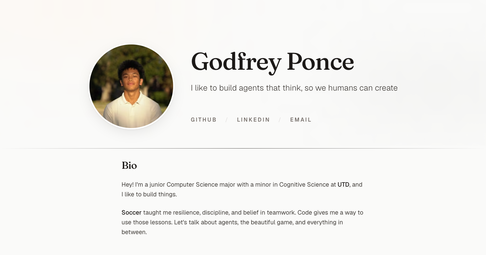
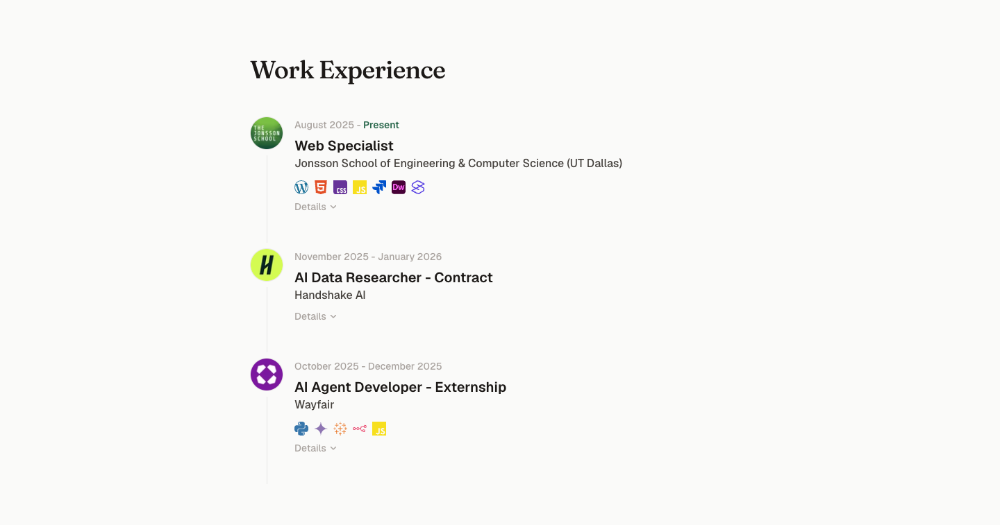
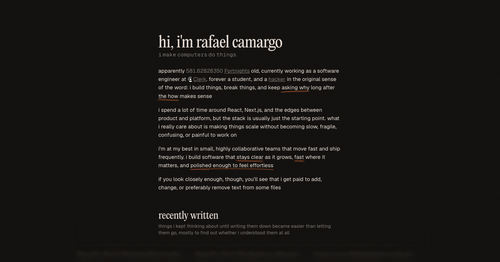
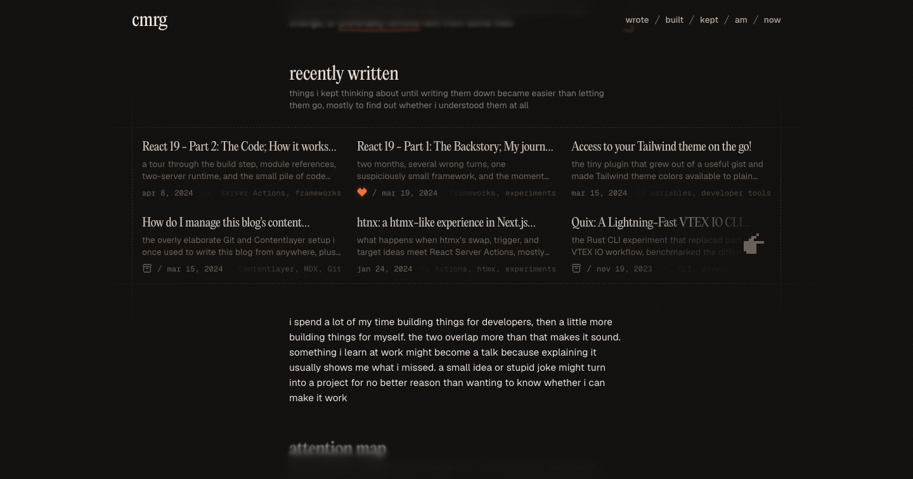
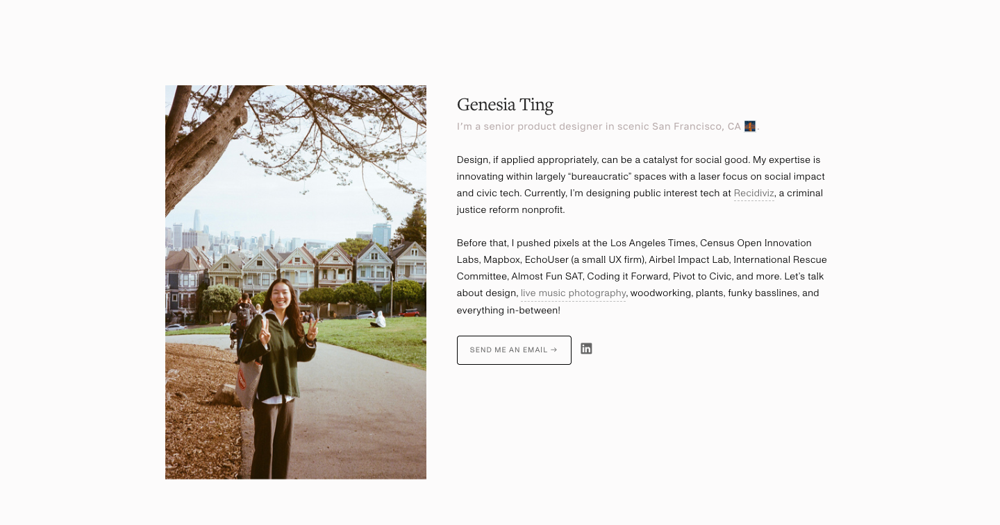
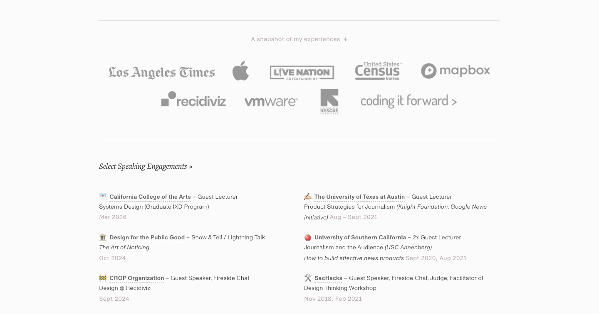

Throwaway page for the #53 feel pass. Deleted when the pass closes. Screenshots taken 2026-08-26 in headless Chrome at a 1440 by 757 viewport; card close-ups are captured at 2x. Click any image to open it at full size. Numbers below are the #53 audit, unchanged.






A shaded cell means the site's value lies outside the range spanned by the two references.
| godfreyponce.dev | cmrg.me | genesiating.com | |
|---|---|---|---|
| h1 size / weight / line-height / tracking | 72 / 500 / 1.00 / -0.025em | 44.5 / 400 / 1.11 / -0.025em | 27.25 / 200 / 1.30 / -0.026em |
| Body size / line-height | 18 / 1.625 | 15.5 / 1.55 | 14.17 / 1.70 |
| Small label size | 12 | 15.5 | 11.99 |
| Content max-width | 768 / 960 / 1024 / 1152 | 576px (40% of 1440) | 964px (67% of 1440) |
| Card border-radius | 24px | 0 to 4px | 0px |
| Distinct backgrounds | 19 | 3 | 2 |
| Distinct text colours | 17 | 20 | 8 |
| Font families | 4 | 2 | 3 |
| Borders | 1px on 33 elements plus a 4px ring | 0 | 1px on 17 elements |
| box-shadow | 1 inset plus the stacked deck | none | none |
| Page length | 8.62 viewports | 4.21 viewports | 3.07 viewports |
| Scroll-reveal animations | 69 elements below opacity 1 | opacity ramp only | 0 |
| First-viewport things | 9 to 11 | 8 | 7 |
Outlier. Unmarked site cells: small label size (12 sits between 11.99 and 15.5), distinct text colours (17 sits between 8 and 20). The body row is marked for its size (18 against 14.17 and 15.5); its line-height 1.625 sits between the references.